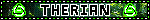
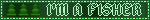
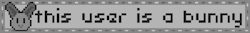
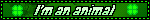

I am a THERIAN, or in other words, on a fundamental level I view myself as a NON-HUMAN animal. Specifically, I am a FISHER and also an AMERICAN BLUE RABBIT.
Much of how I view and interact with the world is through this lens. I wish deeply for FUR and CLAWS and WHISKERS and a SNOUT. To run up a TREE and look around, or to nap with another rabbit in a SUNBEAM.
This intersects with my PLURALITY with both RUG and FLAX being both of my THERIOTYPES, while THE THIRD THING is only fisher.